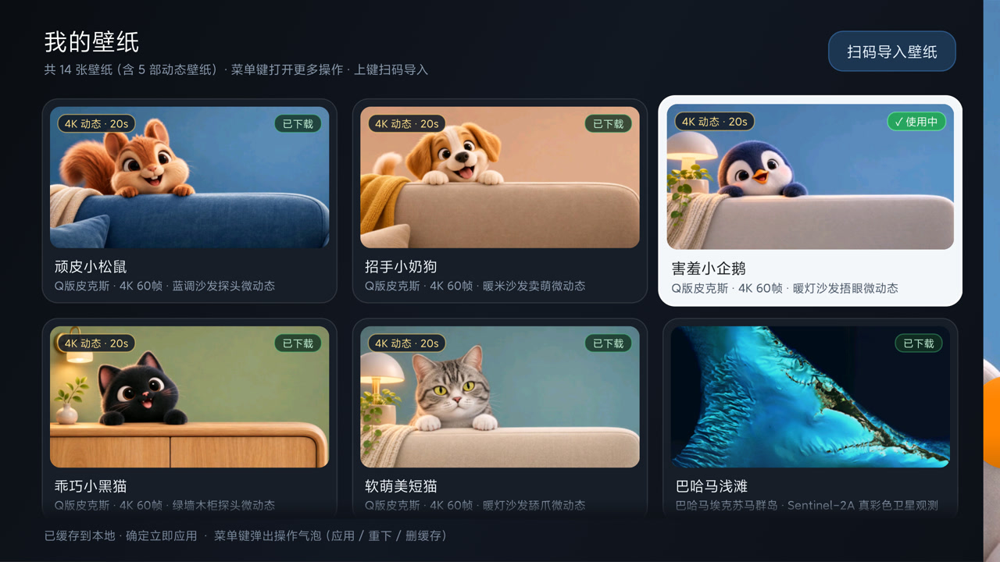
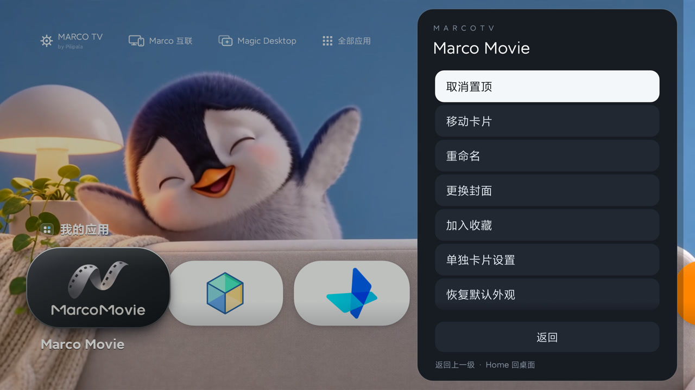
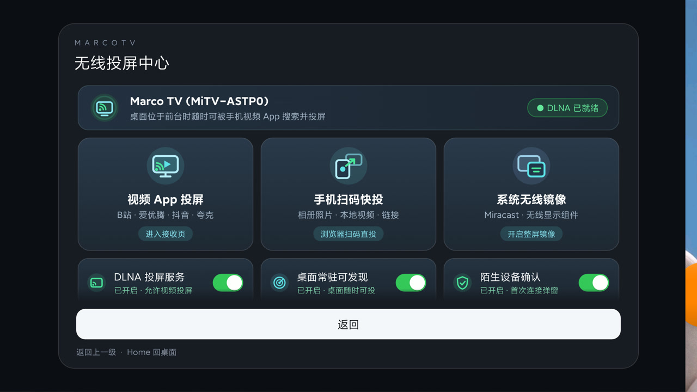
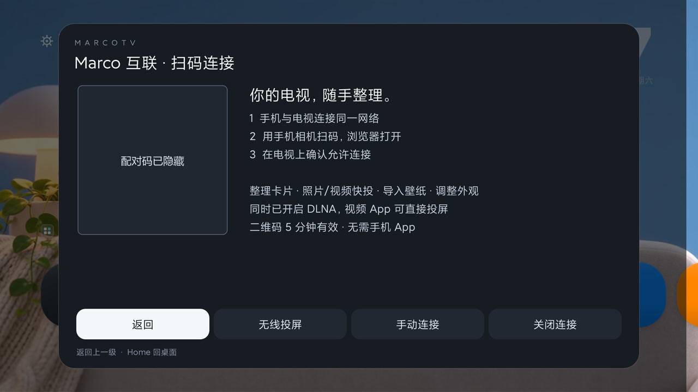
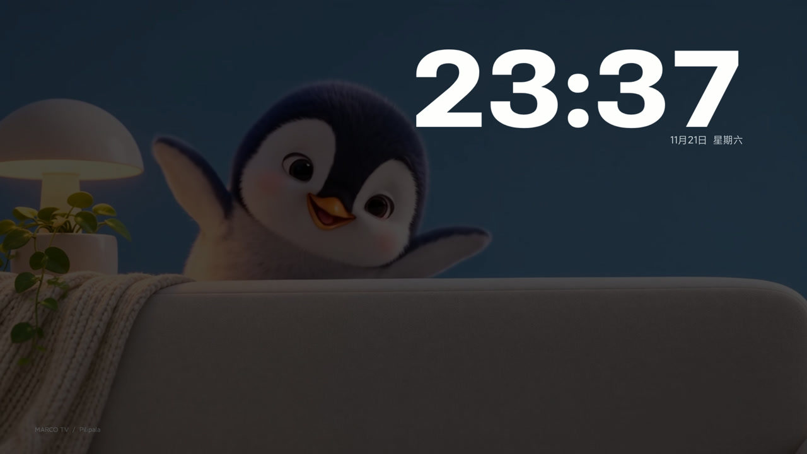

动态壁纸
把你的毛孩子放到电视上。
五花肉、企鹅、松鼠、黑猫——桌面会动，电视就有了生气。也支持本地图片做壁纸。
五花肉 · 动态桌面
害羞小企鹅
顽皮小松鼠
乖巧小黑猫
Magic Desktop
边调，边看效果。
20 项参数集中调整。左侧是放大的 3D 桌面预览，右侧是窄参数面板；设置子页原位切换，返回恢复原焦点。
Magic Desktop · 3D 预览
壁纸画廊
四张内置风景壁纸，也支持本地图片。
在「我的壁纸」里挑一张，或者把自己的照片传上去。

我的壁纸画廊
卡片自定义
常用的，放在前面。
收藏、排序、隐藏、改名、自定义封面。长按一张卡片单独设置；卡片行上下位置 0–100%，卡片高度 70–130%。

卡片长按菜单
投屏与互联
喜欢的内容，上大屏。
DLNA 无线投屏，手机、电脑都能投。Marco 互联同一局域网扫码连接，无需手机 App，即可整理卡片、预览外观、上传壁纸、下载本地备份与脱敏诊断。

无线投屏中心

Marco 互联，扫码连接
设置与息屏时钟
闲下来，留个时间。
闲置时放大并提亮时间、压暗背景。四款时钟，圆体倾斜可调，桌面与屏保共用；双栏设置，常用设置一眼找。

息屏时钟
本页截图为 0.19.0 小米 Android 9 实机画面，卡片为临时示例内容。
能做什么
Marco 互联：同一局域网扫码连接，扫码并在电视确认，整理卡片、预览外观、上传壁纸和导出备份
应用与输入源：读取已安装应用和系统输入源，支持收藏、排序、隐藏、改名、自定义封面
排序：默认按最近从 Marco TV 打开的顺序排列，置顶应用优先，也支持自定义排序
系统最近任务：可选，双击 Home 打开堆叠卡片，回到原页面（需电脑启动任务辅助服务）
本地备份与恢复：自动快照、设置和图片导出，恢复前先预览并备份原配置
壁纸与屏保：四张内置风景壁纸，也支持本地图片；闲置时放大并提亮时间、压暗背景
遥控器操作：滑块左右微调、长按加速，调整时实时预览；设置逐级返回，Home 可直接回桌面
诊断：本地异常记录和诊断报告导出，不上传日志；备份只在本地，不上云
下载
电视版 0.21.3
可覆盖升级并保留配置，无需先卸载。功能与兼容范围请阅读说明。
校验值 SHA-256
2a92aacdcc633de894f51716972ad5fe5b2c15465088195c5ff3fb9174783a6e
下载后对一下这串字符，不一样就重新下载，不要装。
Lite 0.1.2
保留卡片桌面、四款时钟和 Magic Desktop 基础调整，可与完整版共存。已通过 Android 4.0.2 模拟器基础验证，尚无老电视真机验证。更多机型等待实测反馈，欢迎加入测试！Lite 暂无手机互联、系统最近任务或在线更新。
完整版仍需 Android 6.0 及以上。Lite 独立安装和手动更新，不替换完整版更新渠道。
腾讯频道
腾讯频道「Marco交流区」，新版发布、源更新和反馈都在这里。点开加入频道。
捐赠支持
Marco TV 完全免费开源，捐赠全凭自愿，不影响任何功能。感谢你的支持。


先核对你的电视能不能装
最低 Android 6.0 / API 23；实测设备是小米 MiTV-ASTP0、Android 9
先看背面铭牌记下品牌和完整型号，再到原厂设置里看实际系统，不要只记“55 寸”
不能装：三星 Tizen、LG webOS、Roku、Apple tvOS；其他系统需先确认是否兼容 Android APK
最低版本符合，不代表 Home 接管、自动恢复这些管理功能一定都开放，要逐项验收
安装
选择电视系统和手边设备，让向导帮你选择安装路线。Windows 电脑与安卓手机可使用免费安装助手；电视浏览器和厂商文件接收也有对应步骤。
助手 1.0.1 内含桌面 0.16.0，仅支持普通网络 ADB，首次连接需电视授权；无线配对码、iOS 助手暂不支持。使用说明与验证范围
使用 U 盘安装
- 把
MarcoTV-0.21.3.apk复制到 U 盘根目录 - U 盘插到电视普通 USB 口，用电视自带文件管理器打开 U 盘
- 选中安装包，如果系统提示禁止安装，就给“实际打开安装包的那个文件管理器”开一次安装未知应用权限，再重新打开安装包
- 装好后从应用列表打开 Marco TV，先验证方向键、应用启动和设置界面
- 只想先看看桌面，到这里就够了；想设为默认桌面、开机打开、自动恢复，再走 ADB 那一步
完整安装说明、使用说明、各品牌电视设置入口、常见问题，见原项目文档：github.com/Pilipala9919/MarcoTV
电视在线更新
当前提供 0.21.3 正式版。体验渠道与稳定渠道当前提供同一正式版，原 RC 用户可直接覆盖升级。 更多机型等待实测反馈，欢迎加入测试，分享你的使用情况。
安装后到“维护与帮助 → 软件更新”检查更新，日常使用选择稳定版渠道。镜像优先，失败后尝试 GitHub；可选自动下载，安装仍需确认。0.11.1 没有在线更新，需先手动覆盖安装。每次 APK 更新后，最近任务辅助服务仍需电脑重新启动。
更新亮点
按本机指引启用桌面
优先使用系统默认桌面选择；需要调试时提供品牌指引，系统设置返回后自动继续一次。检查实际 Home 服务，支持恢复原配置，保留原厂桌面。Magic Desktop 草稿与壁纸、屏保统一，最近任务动效可连续反向。
更多机型待实测反馈，欢迎加入。诊断保存在本机，不自动上传。
动效衔接与预览优化
顶部入口间距更舒展，焦点连续移动；设置进入、返回与 Magic Desktop 使用统一弹簧动效。列表聚焦和滑块平滑变化，实时预览减少重复绘制。保留原有桌面卡片切换手感。
实机截图不代表帧率。预览转场仍有掉帧，其他机型等待实测反馈，欢迎加入。
全部应用与简单桌面设置
首页打开五列应用抽屉，确定直接启动，长按进入添加流程；包含桌面隐藏的可启动应用。设置默认桌面时先打开系统确认页，选择 Marco TV 即可。厂商隐藏或锁定该功能时，再按帮助操作。
小米 Android 9 实机界面，使用临时示例卡片；不包含私人应用列表。Android 6 为最低要求，其他型号需逐台验证。
自由调整卡片位置与高度
卡片行上下位置 0–100%，卡片高度 70–130%；Magic Desktop 实时预览，保存后应用，支持备份恢复。
四款时钟，圆体倾斜可调
现代宽体、修长窄体、柔圆错倾、雅致衬线。Magic Desktop 调整圆体倾斜幅度 0–14°，桌面与屏保共用。
朦胧壁纸背景
Magic Desktop 预览背后使用当前壁纸的模糊底色，颜色依稀可见，前景保持清晰。
Magic Desktop
首页新入口，20 项参数集中调整。左侧是放大的 3D 桌面预览，右侧是窄参数面板；设置子页原位切换，返回恢复原焦点。
你的电视，随手整理
从电视首页打开 Marco 互联，手机扫码、电视确认。无需手机 App，即可整理卡片、预览外观、上传壁纸、下载本地备份与脱敏诊断。
仅限同一局域网，可随时断开。当前不提供全局遥控、投屏或云端远程控制。
0.14.0 小米 Android 9 实机示例，私人卡片与连接信息均已替换。
官方交流群
通用群，不分软件，Marco TV 和 Marco Movie 都可以在这里交流。点开会跳到 QQ 加群。
常见问题，挑最常问的说
品牌在表里就一定能用吗？
不能，只按品牌判断不够，要核对完整型号、地区和实际系统。
没有开发者选项怎么办？
U 盘试装不一定需要它；需要 ADB 时再按品牌表去关于页找版本号字段启用。
还是装不上？
先确认授权的是实际打开安装包的那个应用，再看是不是儿童模式、酒店模式或品牌禁装，核对安装失败的原文。
提示签名冲突？
已装版本和这个安装包签名不同，不要直接清数据或卸载，先用备份与恢复导出配置和图片。
有人要收钱、要激活码？
没有这个流程，Pilipala 是免费发行，付过钱的尽快找购买平台退款。
反馈要带什么？
品牌、完整型号、系统与软件版本、当前步骤、错误原文；截图前遮住序列号、IP、Wi-Fi 名称这些个人信息。
隐私
备份只做本地快照和用户主动文件导出，不上云；诊断只保存在电视本地，可关闭、清除和预览后导出，不会自动上传。报告里不含 Wi-Fi 名称、IP、节目、视频地址和密码。